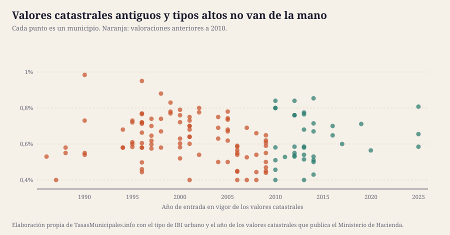

La cuota del IBI es valor catastral × tipo, y de 134 municipios analizados 80 arrastran valores de hace 20 años o más. Por eso comparar tipos de gravamen entre municipios no dice cuánto se paga realmente.
Por Aithamy Rivero · Actualizado el 25 de julio de 2026 · Metodología y fuentes
Todo el debate público sobre el IBI gira alrededor del tipo de gravamen, que es lo que el pleno vota cada año. Pero la cuota es valor catastral × tipo, y el valor catastral lo fija el Catastro en una ponencia de valores que puede tener décadas.
De los 134 municipios analizados, la antigüedad mediana de la última valoración colectiva de urbana es de 21 años. 80 municipios arrastran valores de hace 20 años o más y 128 de hace 10 o más. Solo 6 los han revisado en la última década.
Esto tiene una consecuencia que casi nadie explica: comparar tipos de IBI entre municipios no dice cuánto se paga. La mediana del tipo entre los que llevan 20 años o más sin revisar es del 0,635%, y entre los que han revisado en la última década, del 0,6275%. Cuando un municipio revisa sus valores al alza, suele bajar el tipo para compensar; y al revés.

Puesto uno frente al otro, el patrón se ve mejor que en cualquier tabla: la nube de puntos no dibuja ninguna línea. Hay municipios con valores de los años noventa aplicando tipos bajos y municipios recién revisados en la mitad alta de la horquilla. Esa dispersión es la prueba de que el tipo, por sí solo, no permite ordenar municipios por lo que cuesta el recibo: hacen falta las dos variables, y solo el propietario conoce el valor catastral de su inmueble.
| Municipio | Provincia | Año de la valoración | Antigüedad | Tipo urbano |
|---|---|---|---|---|
| Sarria | Lugo | 1986 | 40 años | 0,53% |
| O Porriño | Pontevedra | 1987 | 39 años | 0,4% |
| Cangas | Pontevedra | 1988 | 38 años | 0,55% |
| Marín | Pontevedra | 1988 | 38 años | 0,58% |
| Tarazona | Zaragoza | 1990 | 36 años | 0,73% |
| O Carballiño | Ourense | 1990 | 36 años | 0,54% |
| Verín | Ourense | 1990 | 36 años | 0,55% |
| Vigo | Pontevedra | 1990 | 36 años | 0,984% |
| Alcañiz | Teruel | 1994 | 32 años | 0,68% |
| Navia | Asturias | 1994 | 32 años | 0,58% |
| Almendralejo | Badajoz | 1994 | 32 años | 0,58% |
| Valladolid | Valladolid | 1995 | 31 años | 0,5837% |
| Montijo | Badajoz | 1995 | 31 años | 0,61% |
| Cáceres | Cáceres | 1995 | 31 años | 0,72% |
| Coria | Cáceres | 1995 | 31 años | 0,73% |
| Plasencia | Cáceres | 1995 | 31 años | 0,6% |
| Teruel | Teruel | 1996 | 30 años | 0,444% |
| Calatayud | Zaragoza | 1996 | 30 años | 0,4977% |
| Siero | Asturias | 1996 | 30 años | 0,58% |
| Almansa | Albacete | 1996 | 30 años | 0,95% |
| Municipio | Provincia | Año de la valoración | Antigüedad | Tipo urbano |
|---|---|---|---|---|
| Molina de Segura | Murcia | 2025 | 1 años | 0,8075% |
| Segovia | Segovia | 2025 | 1 años | 0,655% |
| Palencia | Palencia | 2025 | 1 años | 0,5847% |
| Castrillón | Asturias | 2020 | 6 años | 0,5645% |
| Murcia | Murcia | 2019 | 7 años | 0,7115% |
| Cuenca | Cuenca | 2017 | 9 años | 0,6% |
| Mérida | Badajoz | 2016 | 10 años | 0,7% |
| Aranda de Duero | Burgos | 2016 | 10 años | 0,648% |
| San Pedro del Pinatar | Murcia | 2014 | 12 años | 0,53% |
| Vilagarcía de Arousa | Pontevedra | 2014 | 12 años | 0,51% |
| Década | Municipios | % del total |
|---|---|---|
| 1980–1989 | 4 | 3,0% |
| 1990–1999 | 38 | 28,4% |
| 2000–2009 | 54 | 40,3% |
| 2010–2019 | 34 | 25,4% |
| 2020–2029 | 4 | 3,0% |
Si el valor catastral de tu vivienda se fijó hace 25 años, los datos físicos que se usaron entonces —superficie, año de construcción, uso, estado de la reforma— son los de entonces. Los errores se arrastran ejercicio tras ejercicio. Merece la pena entrar en la Sede Electrónica del Catastro y comprobar la descripción de tu inmueble: si no coincide con la realidad, se puede pedir la subsanación de discrepancias.
El Estado puede actualizar los valores catastrales de un municipio por coeficientes, sin hacer una valoración colectiva nueva, a petición del ayuntamiento. Se aprueban en la Ley de Presupuestos y afectan a los municipios que lo solicitan y que cumplen los requisitos del art. 32.2 del texto refundido de la Ley del Catastro Inmobiliario. Es la vía habitual para corregir valores desfasados sin abrir un procedimiento completo.
Tras una valoración colectiva general al alza, la base liquidable no salta de golpe: el art. 67 del TRLRHL prevé una reducción que se aplica durante nueve años y va desapareciendo poco a poco. Es la razón por la que muchos recibos suben cada año «sin que el ayuntamiento haya subido nada»: lo que sube es la base liquidable, porque la reducción se agota.
Cómo se calcula el IBI paso a paso → · Guía del valor catastral: consultarlo, entenderlo y corregirlo →
Una valoración colectiva de carácter general no es una actualización automática: es un procedimiento completo. El Catastro elabora una ponencia de valores para todo el término municipal, con los módulos de suelo por polígono y los de construcción por tipología, la somete a información pública y la publica en el boletín oficial de la provincia antes del 1 de julio del año anterior a su entrada en vigor (arts. 25 a 27 del texto refundido de la Ley del Catastro Inmobiliario).
Se inicia de oficio o a solicitud del ayuntamiento, y ahí está la clave política del asunto: la ley pide que hayan pasado al menos cinco años desde la anterior, pero no obliga a revisar pasado un plazo. Una revisión al alza sube la base de todos los recibos a la vez, así que no hay muchos incentivos para pedirla en un año electoral. De ahí que la mediana de la muestra esté en 21 años.
Cuando los valores llevan décadas congelados, dejan de reflejar las diferencias reales entre zonas del municipio: el barrio que se ha revalorizado y el que se ha degradado siguen tributando con los módulos de entonces. La desactualización no solo abarata el IBI en conjunto, también lo vuelve menos equitativo entre vecinos.
Conviene separar dos cosas distintas, porque el trámite y el plazo no son los mismos:
Superficie equivocada, un uso que ya no es el que consta, una reforma o una demolición no registradas. Se corrige con una solicitud de subsanación de discrepancias ante el Catastro, sin plazo: se puede pedir en cualquier momento. Los efectos son desde el día siguiente a la resolución, no retroactivos, así que cuanto antes se detecte, mejor.
Aquí sí hay plazo. Contra la notificación del nuevo valor catastral cabe recurso de reposición o reclamación económico-administrativa ante el TEAR en un mes, y son excluyentes: si presentas reposición, la reclamación espera. Pasado ese mes el valor queda firme y ya solo se puede discutir en la siguiente valoración.
Y una advertencia práctica: recurrir el recibo del IBI no sirve para discutir el valor catastral. Son dos administraciones distintas —el ayuntamiento gestiona el IBI, el Catastro fija el valor— y el ayuntamiento no puede modificar la base imponible que le viene dada. Si el problema es el valor, el expediente va al Catastro.
Esta sección resume el procedimiento general; no es asesoramiento jurídico. Los plazos concretos figuran en la notificación que recibas.
El año de entrada en vigor de los valores catastrales resultantes del último procedimiento de valoración colectiva de carácter general sale de la consulta de información impositiva municipal del Ministerio de Hacienda, que lo publica municipio a municipio.
«Antigüedad» es la diferencia entre 2026 y ese año. La comparación de medianas de tipo entre grupos es descriptiva: con 134 municipios y un sesgo hacia los más poblados no permite concluir una relación causal, solo señalar el patrón.
Este dato aparece en la ficha de cada municipio, en la tabla de tipos oficiales. Buscar mi municipio →